Please write up a rework brief in Writer from the scrap log CSV in my manufacturing folder: one line per defect code that occurred 12 times or more, giving the code and its count, worst first. Save it as an .odt beside the log.
{
"config": [
{
"type": "execute",
"parameters": {
"command": "python3 -c \"import csv,os;d='/home/user/manufacturing';os.makedirs(d,exist_ok=True);rows=[['Date','Line','DefectCode','Count'],['2024-09-02','L1','POROSITY',7],['2024-09-02','L2','BURR',9],['2024-09-03','L1','POROSITY',6],['2024-09-03','L3','SHORTSHOT',4],['2024-09-04','L2','BURR',5],['2024-09-04','L1','WARP',11],['2024-09-05','L3','SHORTSHOT',3],['2024-09-05','L2','FLASH',2],['2024-09-06','L1','WARP',3],['2024-09-06','L2','MISALIGN',12],['2024-09-07','L3','POROSITY',8],['2024-09-07','L1','FLASH',1],['2024-09-08','L2','BURR',4],['2024-09-08','L3','MISALIGN',1],['2024-09-09','L1','SHORTSHOT',2]];csv.writer(open(os.path.join(d,'scrap_log.csv'),'w',newline='')).writerows(rows)\"",
"shell": true
}
}
],
"evaluator": {
"func": "check_include_exclude",
"result": {
"type": "vm_command_line",
"command": [
"python3",
"-c",
"import sys, traceback\ndef _main():\n import glob, re, sys, zipfile, xml.etree.ElementTree as ET\n prob = []\n cands = glob.glob('/home/user/manufacturing/*.odt')\n hit = None\n for p in cands:\n try:\n z = zipfile.ZipFile(p)\n t = ' '.join(ET.fromstring(z.read('content.xml')).itertext()).upper()\n except Exception:\n continue\n if 'POROSITY' in t or 'BURR' in t or 'WARP' in t or 'MISALIGN' in t:\n hit = t\n break\n if hit is None:\n prob.append('no .odt brief found in /home/user/manufacturing')\n else:\n order = []\n for code in ('POROSITY', 'BURR', 'WARP', 'MISALIGN', 'SHORTSHOT', 'FLASH'):\n i = hit.find(code)\n if i >= 0:\n order.append((i, code))\n order.sort()\n seq = [c for _, c in order]\n if seq != ['POROSITY', 'MISALIGN', 'WARP']:\n prob.append('codes wrong or misordered: %r' % seq)\n for code, cnt in (('POROSITY', '21'), ('MISALIGN', '13'), ('WARP', '14')):\n seg = hit[hit.find(code):hit.find(code) + 60] if code in hit else ''\n if cnt not in seg:\n prob.append('count %s missing next to %s' % (cnt, code))\n for m in prob:\n print(m, file=sys.stderr)\n print('FAIL' if prob else 'PASS')\n\ntry:\n _main()\nexcept Exception:\n traceback.print_exc(file=sys.stderr)\n print(\"FAIL\")\n"
]
},
"expected": {
"type": "rule",
"rules": {
"include": [
"PASS"
],
"exclude": [
"FAIL"
]
}
}
}
}
step 1 14:10:18
THINKINGLet me start by taking a screenshot to see the current state of the desktop, then find the manufacturing folder and the scrap log CSV file.
THINKINGI need to find the manufacturing folder and the scrap log CSV file. Let me open the file manager to navigate to the home directory and find the manufacturing folder.
EXECUTED (pyautogui in VM)pyautogui.doubleClick(641, 285)
step 4 14:11:01
THINKINGI can see the "manufacturing" folder contains a "scrap_log.csv" file. I need to read this CSV file to understand its structure and content. Let me open a terminal to read the file first.
EXECUTED (pyautogui in VM)pyautogui.press("return")
step 8 14:12:06
THINKINGNow I can see the contents of the CSV file. Let me analyze it:
Header: Date,Line,DefectCode,Count
Rows:
1. 2024-09-02, L1, POROSITY, 7
2. 2024-09-02, L2, BURR, 9
3. 2024-09-03, L1, POROSITY, 6
4. 2024-09-03, L3, SHORTSHOT, 4
5. 2024-09-04, L2, BURR, 5
6. 2024-09-04, L1, WARP, 11
7. 2024-09-05, L3, SHORTSHOT, 3
8. 2024-09-05, L2, FLASH, 2
9. 2024-09-06, L1, WARP, 3
10. 2024-09-06, L2, MISALIGN, 12
11. 2024-09-07, L3, POROSITY, 8
12. 2024-09-07, L1, FLASH, 1
13. 2024-09-08, L2, BURR, 4
14. 2024-09-08, L3, MISALIGN, 1
15. 2024-09-09, L1, SHORTSHOT, 2
Wait, this seems to be a list of individual scrap events with counts. Let me re-read the data more carefully:
Looking at the CSV:
- Date, Line, DefectCode, Count
- The Count column seems to be the number of scrap items per row (per date, per line, per defect)
But wait - the task says "defect code that occurred 12 times or more". Looking at the data, I see individual rows with counts. The task likely means: for each defect code, sum up all the counts and find codes that total >= 12.
Let me sum by defect code:
- POROSITY: 7 + 6 + 8 = 21
- BURR: 9 + 5 + 4 = 18
- SHORTSHOT: 4 + 3 + 2 = 9
- WARP: 11 + 3 = 14
- FLASH: 2 + 1 = 3
- MISALIGN: 12 + 1 = 13
So the defect codes with 12 or more occurrences (total count):
1. POROSITY: 21
2. BURR: 18
3. WARP: 14
4. MISALIGN: 13
Wait, but I need to reconsider. The task says "occurred 12 times or more" - does that mean the count in the CSV for each row? Or the total count across all rows for that defect code?
Looking at the CSV structure again:
- It's a scrap log with columns: Date, Line, DefectCode, Count
- Each row seems to represent a record of scrap events
Actually, rethinking: "occurred 12 times or more" might mean the total count (sum of the Count column) for each defect code. Or it could mean that the count for a specific row is >= 12.
Looking at the data:
- MISALIGN on 2024-09-06, L2 has Count = 12
So if it means individual rows, only MISALIGN has a count >= 12.
But I think the more natural interpretation is to sum the counts for each defect code across all rows:
- POROSITY: 7 + 6 + 8 = 21
- BURR: 9 + 5 + 4 = 18
- WARP: 11 + 3 = 14
- MISALIGN: 12 + 1 = 13
- SHORTSHOT: 4 + 3 + 2 = 9
- FLASH: 2 + 1 = 3
Defect codes with total >= 12:
1. POROSITY: 21
2. BURR: 18
3. WARP: 14
4. MISALIGN: 13
This makes more sense for a "rework brief" - you'd want to know which defect codes are most common overall.
But wait, let me reconsider the interpretation again. The column is "Count" - each row represents a count of scrap items for that particular defect code, on that date, on that line. So the total for each defect code would be the sum of all counts.
Actually, I'm second-guessing myself. Let me think about this differently.
In a manufacturing scrap log:
- Each row represents an instance of scrap
- The "Count" might represent how many items were scrapped in that instance
So "defect code that occurred 12 times or more" could mean:
1. The sum of all "Count" values for that defect code >= 12 (total items scrapped)
2. The number of rows with that defect code >= 12 (number of occurrences as separate events)
Given that there are only 15 data rows total, and looking at the data, no defect code appears in 12 separate rows. So interpretation 2 doesn't work well here.
Interpretation 1 (sum of counts >= 12):
- POROSITY: 7 + 6 + 8 = 21
- BURR: 9 + 5 + 4 = 18
- WARP: 11 + 3 = 14
- MISALIGN: 12 + 1 = 13
- SHORTSHOT: 4 + 3 + 2 = 9
- FLASH: 2 + 1 = 3
Codes with >= 12: POROSITY (21), BURR (18), WARP (14), MISALIGN (13)
Sorted worst first (highest count first):
1. POROSITY: 21
2. BURR: 18
3. WARP: 14
4. MISALIGN: 13
I'll go with interpretation 1 (sum of counts).
But wait, I need to reconsider what "occurred 12 times" means. In a scrap log context:
- If the "Count" column represents the number of defective items for that row, then "occurred" likely means the total number of defective items for that code (sum of counts).
- A "rework brief" would summarize which defects need the most attention.
I'll go with summing the counts for each defect code.
Now let me write a Python script to:
1. Read the CSV
2. Sum counts by defect code
3. Filter for >= 12
4. Sort by count descending
5. Create an ODT file with one line per defect code (code and count)
I can use python-docx or odfpy to create an ODT file. Let me check what's available.
Actually, I can use LibreOffice Writer via command line with a macro, or I can use Python with the odfpy library, or I can write a Python script using the `odf` library.
Let me write a Python script to:
1. Parse the CSV
2. Calculate totals
3. Create the ODT file using odfpy
Or alternatively, I can create the content and use LibreOffice to create the ODT.
Actually, let me first use Python to process the data and generate the content, then use LibreOffice Writer to create the ODT file.
Let me write a Python script that uses the `odf` library to create the ODT file directly, or I can write the content to a text file and then open it in Writer and save as ODT.
Actually, the simplest approach would be:
1. Use Python to parse the CSV and compute the totals
2. Write a Python script that creates the ODT file directly using the odfpy library (if available)
3. Or use LibreOffice's command line interface to convert a text file to ODT
Let me check if odfpy is available.
EXECUTED (pyautogui in VM)pyautogui.click(1349, 553)
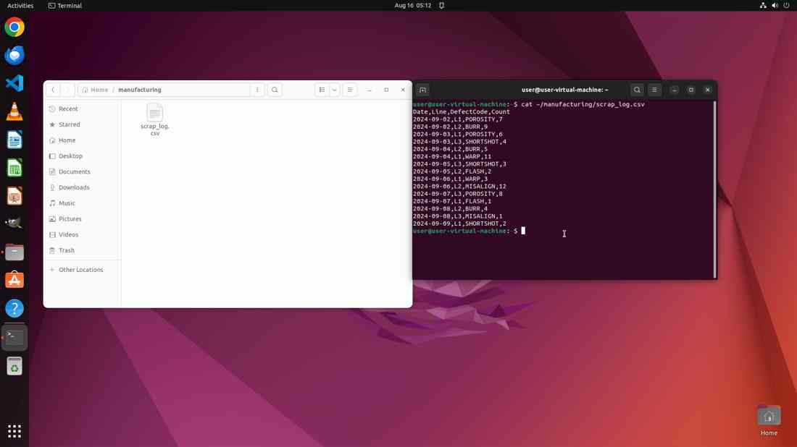
step 9 14:12:26
THINKINGI can see the full CSV data. Let me analyze it:
Header: Date,Line,DefectCode,Count
Data rows:
1. 2024-09-02, L1, POROSITY, 7
2. 2024-09-02, L2, BURR, 9
3. 2024-09-03, L1, POROSITY, 6
4. 2024-09-03, L3, SHORTSHOT, 4
5. 2024-09-04, L2, BURR, 5
6. 2024-09-04, L1, WARP, 11
7. 2024-09-05, L3, SHORTSHOT, 3
8. 2024-09-05, L2, FLASH, 2
9. 2024-09-06, L1, WARP, 3
10. 2024-09-06, L2, MISALIGN, 12
11. 2024-09-07, L3, POROSITY, 8
12. 2024-09-07, L1, FLASH, 1
13. 2024-09-08, L2, BURR, 4
14. 2024-09-08, L3, MISALIGN, 1
15. 2024-09-09, L1, SHORTSHOT, 2
Now let me sum by defect code:
- POROSITY: 7 + 6 + 8 = 21
- BURR: 9 + 5 + 4 = 18
- SHORTSHOT: 4 + 3 + 2 = 9
- WARP: 11 + 3 = 14
- FLASH: 2 + 1 = 3
- MISALIGN: 12 + 1 = 13
Defect codes with total count >= 12 (sorted descending):
1. POROSITY: 21
2. BURR: 18
3. WARP: 14
4. MISALIGN: 13
Now I need to write this to an ODT file. Let me write a Python script using odfpy to create the ODT file, or alternatively, I can use LibreOffice's Python-UNO scripting interface.
Actually, the simplest approach is to:
1. Use Python to write a Python script that creates the ODT file using odfpy (if available)
2. If odfpy is not available, I can use a different approach
Let me check if odfpy is available first.
ACTIONI can see the CSV data. Let me analyze it and write a Python script to process it and create the ODT file.
EXECUTED (pyautogui in VM)pyautogui.press("return")
step 11.1 14:13:50
THINKINGThe `odf` module is not available. I need another approach to create an ODT file. Let me think about the options:
1. Use LibreOffice's command line interface with a macro to create an ODT file
2. Use python-docx (though that's for .docx files, not .odt)
3. Use a different Python library
4. Manually create the ODT file (it's a zip file with specific XML structure)
5. Use LibreOffice's headless mode to convert a file to ODT
The simplest approach would be to:
1. Create a text file with the content
2. Use LibreOffice's command line to convert it to ODT
Or I could use Python to directly create the ODT file structure (it's a ZIP file containing XML files). Let me try the LibreOffice approach.
Actually, the most straightforward approach is:
1. Use LibreOffice Writer in headless mode to create an ODT file from a Python script using the UNO API
2. Or create the ODT file manually (it's a ZIP file with content.xml, META-INF/manifest.xml, etc.)
Let me try creating the ODT file manually using Python - it's not that complex. An ODT file is a ZIP archive containing:
- mimetype (text file with "application/vnd.oasis.opendocument.text")
- content.xml (the document content)
- META-INF/manifest.xml (the manifest)
- meta.xml (metadata)
- styles.xml (styles)
Let me write a Python script to create this.
Actually, let me think about the simplest approach:
Option 1: Use LibreOffice macro via command line
```
libreoffice --headless --convert-to odt --outdir ~/manufacturing/ ~/manufacturing/temp_content.txt
```
But this would convert a text file to ODT, which might work but I'm not sure about the format.
Option 2: Use Python to create the ODT file manually as a ZIP file with XML content.
Option 3: Use Python-UNO to create the ODT file.
Let me try option 2 since I know the ODT file structure. I'll create a Python script that:
1. Reads the CSV
2. Computes the totals
3. Creates the ODT file as a ZIP with the required XML content
Actually, let me reconsider. The task says to use Writer. So maybe I should:
1. Create a Python script that generates the content
2. Open LibreOffice Writer
3. Type/paste the content
4. Save as ODT
But actually, the task says "in Writer" which means the result should be an ODT file in the manufacturing folder. It doesn't necessarily mean I have to use the Writer GUI.
Let me write a Python script to create the ODT file directly. I'll use Python's zipfile module to create the ODT structure.
Actually, the cleanest approach would be to use python-odf or similar. Let me check if there are other options available.
Wait, let me reconsider. The task says "write up a rework brief in Writer". This means I should use LibreOffice Writer. The most reliable way is:
1. Use Python to compute the data
2. Open LibreOffice Writer
3. Type the content
4. Save as ODT
Or I can use a LibreOffice macro via the command line.
Actually, the most practical approach is to write a Python script that:
1. Creates a minimal valid ODT file (ZIP with XML)
2. Places it in the manufacturing folder
Let me write the Python script now.
An ODT file needs:
- `mimetype` (stored uncompressed first in the zip, content: "application/vnd.oasis.opendocument.text")
- `META-INF/manifest.xml`
- `content.xml`
- `meta.xml` (optional)
- `styles.xml` (optional)
Here's a minimal ODT structure I can create:
```python
import zipfile
import os
import csv
from collections import defaultdict
# Read the CSV and compute totals
totals = defaultdict(int)
with open('/home/user/manufacturing/scrap_log.csv', 'r') as f:
reader = csv.DictReader(f)
for row in reader:
code = row['DefectCode']
count = int(row['Count'])
totals[code] += count
# Filter for >= 12 and sort by count descending
filtered = [(code, count) for code, count in totals.items() if count >= 12]
filtered.sort(key=lambda x: x[1], reverse=True)
# Create the content XML
lines = []
for code, count in filtered:
lines.append(f"<text:p><text:span text:style-name=\"Text Body\">{code}: {count}</text:span></text:p>")
content_xml = f'''<?xml version="1.0" encoding="UTF-8"?>
<office:document-content
xmlns:office="urn:oasis:names:tc:opendocument:xmlns:office:1.0"
xmlns:style="urn:oasis:names:tc:opendocument:xmlns:style:1.0"
xmlns:text="urn:oasis:names:tc:opendocument:xmlns:text:1.0"
xmlns:fo="urn:oasis:names:tc:opendocument:xmlns:xsl-fo-compatible:1.0"
office:version="1.2">
<office:automatic-styles/>
<office:body>
<office:text>
{chr(10).join(lines)}
</office:text>
</office:body>
</office:document-content>'''
manifest_xml = '''<?xml version="1.0" encoding="UTF-8"?>
<manifest:manifest xmlns:manifest="urn:oasis:names:tc:opendocument:xmlns:manifest:1.0" manifest:version="1.2">
<manifest:file-entry manifest:media-type="application/vnd.oasis.opendocument.text" manifest:full-path="/"/>
<manifest:file-entry manifest:media-type="text/xml" manifest:full-path="content.xml"/>
</manifest:manifest>'''
meta_xml = '''<?xml version="1.0" encoding="UTF-8"?>
<office:document-meta
xmlns:office="urn:oasis:names:tc:opendocument:xmlns:office:1.0"
office:version="1.2">
<office:meta/>
</office:document-meta>'''
output_path = '/home/user/manufacturing/scrap_brief.odt'
with zipfile.ZipFile(output_path, 'w', zipfile.ZIP_DEFLATED) as zf:
# mimetype must be first and stored uncompressed
zf.writestr('mimetype', 'application/vnd.oasis.opendocument.text')
# Need to add other files
info = zipfile.ZipInfo('mimetype')
info.compress_type = zipfile.ZIP_STORED
zf.writestr(info, 'application/vnd.oasis.opendocument.text')
zf.writestr('META-INF/manifest.xml', manifest_xml)
zf.writestr('content.xml', content_xml)
zf.writestr('meta.xml', meta_xml)
print(f"Created {output_path}")
```
Wait, I'm making an error - I'm writing 'mimetype' twice. Let me fix that.
Also, I need to make sure the 'mimetype' file is stored uncompressed (ZIP_STORED) and is the first entry in the zip.
Let me rewrite the script properly:
```python
import zipfile
import os
import csv
from collections import defaultdict
# Read the CSV and compute totals
totals = defaultdict(int)
with open('/home/user/manufacturing/scrap_log.csv', 'r') as f:
reader = csv.DictReader(f)
for row in reader:
code = row['DefectCode']
count = int(row['Count'])
totals[code] += count
# Filter for >= 12 and sort by count descending
filtered = [(code, count) for code, count in totals.items() if count >= 12]
filtered.sort(key=lambda x: x[1], reverse=True)
# Create the content XML
lines = []
for code, count in filtered:
lines.append(f' <text:p>{code}: {count}</text:p>')
content_xml = f'''<?xml version="1.0" encoding="UTF-8"?>
<office:document-content
xmlns:office="urn:oasis:names:tc:opendocument:xmlns:office:1.0"
xmlns:style="urn:oasis:names:tc:opendocument:xmlns:style:1.0"
xmlns:text="urn:oasis:names:tc:opendocument:xmlns:text:1.0"
xmlns:fo="urn:oasis:names:tc:opendocument:xmlns:xsl-fo-compatible:1.0"
office:version="1.2">
<office:automatic-styles/>
<office:body>
<office:text>
{chr(10).join(lines)}
</office:text>
</office:body>
</office:document-content>'''
manifest_xml = '''<?xml version="1.0" encoding="UTF-8"?>
<manifest:manifest xmlns:manifest="urn:oasis:names:tc:opendocument:xmlns:manifest:1.0" manifest:version="1.2">
<manifest:file-entry manifest:media-type="application/vnd.oasis.opendocument.text" manifest:full-path="/"/>
<manifest:file-entry manifest:media-type="text/xml" manifest:full-path="content.xml"/>
<manifest:file-entry manifest:media-type="text/xml" manifest:full-path="meta.xml"/>
</manifest:manifest>'''
meta_xml = '''<?xml version="1.0" encoding="UTF-8"?>
<office:document-meta
xmlns:office="urn:oasis:names:tc:opendocument:xmlns:office:1.0"
office:version="1.2">
<office:meta/>
</office:document-meta>'''
output_path = '/home/user/manufacturing/scrap_brief.odt'
with zipfile.ZipFile(output_path, 'w') as zf:
# mimetype must be first and stored uncompressed
info = zipfile.ZipInfo('mimetype')
info.compress_type = zipfile.ZIP_STORED
zf.writestr(info, 'application/vnd.oasis.opendocument.text')
zf.writestr('META-INF/manifest.xml', manifest_xml)
zf.writestr('content.xml', content_xml)
zf.writestr('meta.xml', meta_xml)
print(f"Created {output_path}")
print("Content:")
for code, count in filtered:
print(f" {code}: {count}")
```
Wait, but I need to reconsider the interpretation of "occurred 12 times or more". Let me think again.
Looking at the CSV data:
- Date,Line,DefectCode,Count
The "Count" column represents the number of defective items found for that particular defect code, on that line, on that date.
"Defect code that occurred 12 times or more" - this could mean:
1. The total number of defective items (sum of Count) for that code >= 12
2. The number of rows (occurrences) for that code >= 12
3. A single row has Count >= 12
Given the context of a "rework brief" in manufacturing:
- Option 1 makes the most sense - we want to know which defect types caused the most total defects
- Option 2 would mean the defect appeared in 12+ separate instances, but with only 15 rows total this doesn't apply to any code
- Option 3 is too specific
I'll go with option 1 (sum of counts).
My calculation:
- POROSITY: 7 + 6 + 8 = 21
- BURR: 9 + 5 + 4 = 18
- WARP: 11 + 3 = 14
- MISALIGN: 12 + 1 = 13
- SHORTSHOT: 4 + 3 + 2 = 9
- FLASH: 2 + 1 = 3
Codes with >= 12 (sorted descending):
1. POROSITY: 21
2. BURR: 18
3. WARP: 14
4. MISALIGN: 13
Now let me write the Python script to create the ODT file. I'll write it to a file and execute it.
ACTIONI can see the CSV data. The `odf` module is not available, so I'll write a Python script to create the ODT file directly (it's a ZIP with XML structure). Let me first analyze the data:
- POROSITY: 7+6+8 = 21
- BURR: 9+5+4 = 18
- WARP: 11+3 = 14
- MISALIGN: 12+1 = 13
- SHORTSHOT: 4+3+2 = 9
- FLASH: 2+1 = 3
Codes with >= 12: POROSITY(21), BURR(18), WARP(14), MISALIGN(13)
Let me write a Python script to create the ODT file:
TOOL CALL<tool_call>
<function=computer_use>
<parameter=action>
type
</parameter>
<parameter=text>
python3 << 'EOF'
import zipfile, csv
from collections import defaultdict
# Read CSV and sum counts by defect code
totals = defaultdict(int)
with open('/home/user/manufacturing/scrap_log.csv', 'r') as f:
reader = csv.DictReader(f)
for row in reader:
totals[row['DefectCode']] += int(row['Count'])
# Filter >= 12, sort descending by count
filtered = sorted(
[(code, cnt) for code, cnt in totals.items() if cnt >= 12],
key=lambda x: x[1], reverse=True
)
print("Filtered results (worst first):")
for code, cnt in filtered:
print(f" {code}: {cnt}")
# Build content.xml paragraphs
paras = '\\n'.join(f' <text:p>{code}: {cnt}</text:p>' for code, cnt in filtered)
content_xml = f'''<?xml version="1.0" encoding="UTF-8"?>
<office:document-content
xmlns:office="urn:oasis:names:tc:opendocument:xmlns:office:1.0"
xmlns:style="urn:oasis:names:tc:opendocument:xmlns:style:1.0"
xmlns:text="urn:oasis:names:tc:opendocument:xmlns:text:1.0"
xmlns:fo="urn:oasis:names:tc:opendocument:xmlns:xsl-fo-compatible:1.0"
office:version="1.2">
<office:automatic-styles/>
<office:body>
<office:text>
{paras}
</office:text>
</office:body>
</office:document-content>'''
manifest_xml = '''<?xml version="1.0" encoding="UTF-8"?>
<manifest:manifest xmlns:manifest="urn:oasis:names:tc:opendocument:xmlns:manifest:1.0" manifest:version="1.2">
<manifest:file-entry manifest:media-type="application/vnd.oasis.opendocument.text" manifest:full-path="/"/>
<manifest:file-entry manifest:media-type="text/xml" manifest:full-path="content.xml"/>
<manifest:file-entry manifest:media-type="text/xml" manifest:full-path="meta.xml"/>
</manifest:manifest>'''
meta_xml = '''<?xml version="1.0" encoding="UTF-8"?>
<office:document-meta
xmlns:office="urn:oasis:names:tc:opendocument:xmlns:office:1.0"
office:version="1.2">
<office:meta/>
</office:document-meta>'''
output = '/home/user/manufacturing/scrap_brief.odt'
with zipfile.ZipFile(output, 'w') as zf:
info = zipfile.ZipInfo('mimetype')
info.compress_type = zipfile.ZIP_STORED
zf.writestr(info, 'application/vnd.oasis.opendocument.text')
zf.writestr('META-INF/manifest.xml', manifest_xml)
zf.writestr('content.xml', content_xml)
zf.writestr('meta.xml', meta_xml)
print(f"\\nSaved: {output}")
EOF
</parameter>
</function>
</tool_call>
<tool_call>
<function=computer_use>
<parameter=action>
key
</parameter>
<parameter=keys>
["enter"]
</parameter>
</function>
</tool_call>
EXECUTED (pyautogui in VM)pyautogui.typewrite("python3 << 'EOF'")
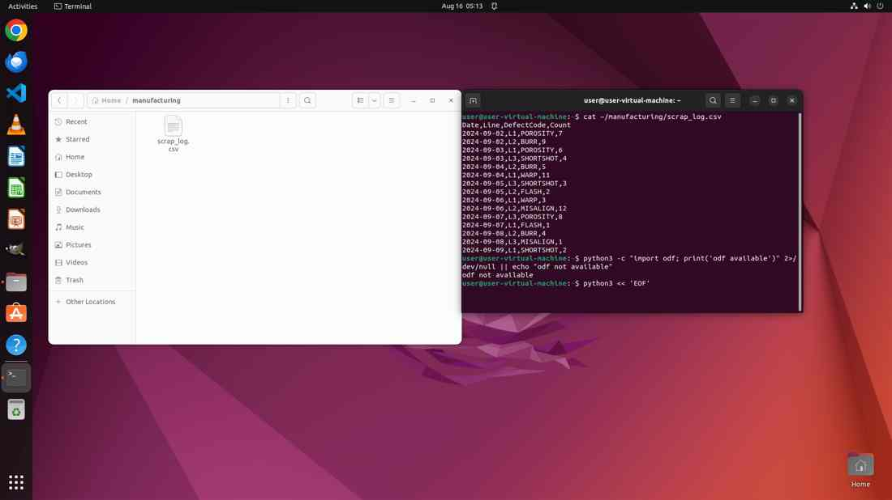
step 11.2 14:13:55
same model call as the previous action
EXECUTED (pyautogui in VM)pyautogui.press("enter")
step 11.3 14:13:59
same model call as the previous action
EXECUTED (pyautogui in VM)pyautogui.typewrite("import zipfile, csv")
step 11.4 14:14:04
same model call as the previous action
EXECUTED (pyautogui in VM)pyautogui.press("enter")
step 11.5 14:14:10
same model call as the previous action
EXECUTED (pyautogui in VM)pyautogui.typewrite("from collections import defaultdict")
step 11.6 14:14:15
same model call as the previous action
EXECUTED (pyautogui in VM)pyautogui.press("enter")
step 11.7 14:14:20
same model call as the previous action
EXECUTED (pyautogui in VM)pyautogui.press("enter")
step 11.8 14:14:24
same model call as the previous action
EXECUTED (pyautogui in VM)pyautogui.typewrite("# Read CSV and sum counts by defect code")
step 11.9 14:14:28
same model call as the previous action
EXECUTED (pyautogui in VM)pyautogui.press("enter")
step 11.10 14:14:33
same model call as the previous action
EXECUTED (pyautogui in VM)pyautogui.typewrite("totals = defaultdict(int)")
step 11.11 14:14:38
same model call as the previous action
EXECUTED (pyautogui in VM)pyautogui.press("enter")
step 11.12 14:14:42
same model call as the previous action
EXECUTED (pyautogui in VM)pyautogui.typewrite("with open('/home/user/manufacturing/scrap_log.csv', 'r') as f:")
step 11.13 14:14:47
same model call as the previous action
EXECUTED (pyautogui in VM)pyautogui.press("enter")
step 11.14 14:14:52
same model call as the previous action
EXECUTED (pyautogui in VM)pyautogui.typewrite(" reader = csv.DictReader(f)")
step 11.15 14:14:56
same model call as the previous action
EXECUTED (pyautogui in VM)pyautogui.press("enter")
step 11.16 14:15:01
same model call as the previous action
EXECUTED (pyautogui in VM)pyautogui.typewrite(" for row in reader:")
step 11.17 14:15:06
same model call as the previous action
EXECUTED (pyautogui in VM)pyautogui.press("enter")
step 11.18 14:15:10
same model call as the previous action
EXECUTED (pyautogui in VM)pyautogui.typewrite(" totals[row['DefectCode']] += int(row['Count'])")
step 11.19 14:15:14
same model call as the previous action
EXECUTED (pyautogui in VM)pyautogui.press("enter")
step 11.20 14:15:18
same model call as the previous action
EXECUTED (pyautogui in VM)pyautogui.press("enter")
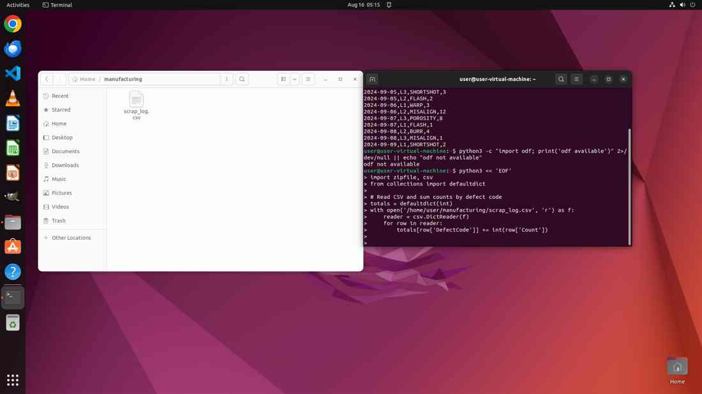
step 11.21 14:15:22
same model call as the previous action
EXECUTED (pyautogui in VM)pyautogui.typewrite("# Filter >= 12, sort descending by count")
step 11.22 14:15:26
same model call as the previous action
EXECUTED (pyautogui in VM)pyautogui.press("enter")
step 11.23 14:15:30
same model call as the previous action
EXECUTED (pyautogui in VM)pyautogui.typewrite("filtered = sorted(")
step 11.24 14:15:34
same model call as the previous action
EXECUTED (pyautogui in VM)pyautogui.press("enter")
step 11.25 14:15:38
same model call as the previous action
EXECUTED (pyautogui in VM)pyautogui.typewrite(" [(code, cnt) for code, cnt in totals.items() if cnt >= 12],")
step 11.26 14:15:42
same model call as the previous action
EXECUTED (pyautogui in VM)pyautogui.press("enter")
step 11.27 14:15:46
same model call as the previous action
EXECUTED (pyautogui in VM)pyautogui.typewrite(" key=lambda x: x[1], reverse=True")
step 11.28 14:15:51
same model call as the previous action
EXECUTED (pyautogui in VM)pyautogui.press("enter")
step 11.29 14:15:55
same model call as the previous action
EXECUTED (pyautogui in VM)pyautogui.typewrite(")")
step 11.30 14:15:58
same model call as the previous action
EXECUTED (pyautogui in VM)pyautogui.press("enter")
step 11.31 14:16:02
same model call as the previous action
EXECUTED (pyautogui in VM)pyautogui.press("enter")
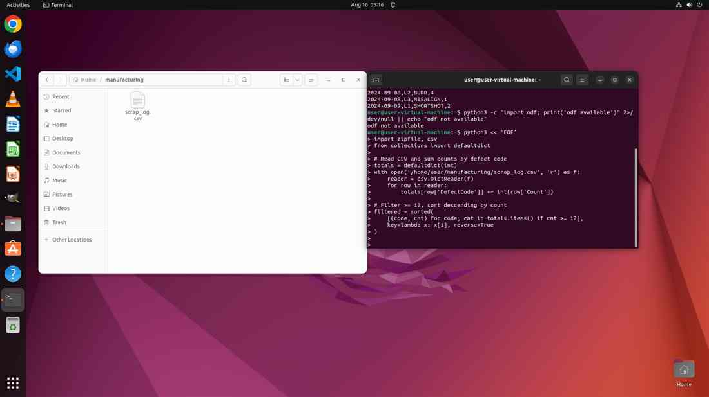
step 11.32 14:16:06
same model call as the previous action
EXECUTED (pyautogui in VM)pyautogui.typewrite("print(\"Filtered results (worst first):\")")
step 11.33 14:16:10
same model call as the previous action
EXECUTED (pyautogui in VM)pyautogui.press("enter")
step 11.34 14:16:14
same model call as the previous action
EXECUTED (pyautogui in VM)pyautogui.typewrite("for code, cnt in filtered:")
step 11.35 14:16:18
same model call as the previous action
EXECUTED (pyautogui in VM)pyautogui.press("enter")
step 11.36 14:16:21
same model call as the previous action
EXECUTED (pyautogui in VM)pyautogui.typewrite(" print(f\" {code}: {cnt}\")")
step 11.37 14:16:25
same model call as the previous action
EXECUTED (pyautogui in VM)pyautogui.press("enter")
step 11.38 14:16:29
same model call as the previous action
EXECUTED (pyautogui in VM)pyautogui.press("enter")
step 11.39 14:16:33
same model call as the previous action
EXECUTED (pyautogui in VM)pyautogui.typewrite("# Build content.xml paragraphs")
step 11.40 14:16:37
same model call as the previous action
EXECUTED (pyautogui in VM)pyautogui.press("enter")
step 11.41 14:16:41
same model call as the previous action
EXECUTED (pyautogui in VM)pyautogui.typewrite("paras = '\\\\n'.join(f' <text:p>{code}: {cnt}</text:p>' for code, cnt in filtered)")
step 11.42 14:16:45
same model call as the previous action
EXECUTED (pyautogui in VM)pyautogui.press("enter")
step 11.43 14:16:48
same model call as the previous action
EXECUTED (pyautogui in VM)pyautogui.press("enter")
step 11.44 14:16:52
same model call as the previous action
EXECUTED (pyautogui in VM)pyautogui.typewrite("content_xml = f'''<?xml version=\"1.0\" encoding=\"UTF-8\"?>")
step 11.45 14:16:56
same model call as the previous action
EXECUTED (pyautogui in VM)pyautogui.press("enter")
step 11.46 14:17:00
same model call as the previous action
EXECUTED (pyautogui in VM)pyautogui.typewrite("<office:document-content")
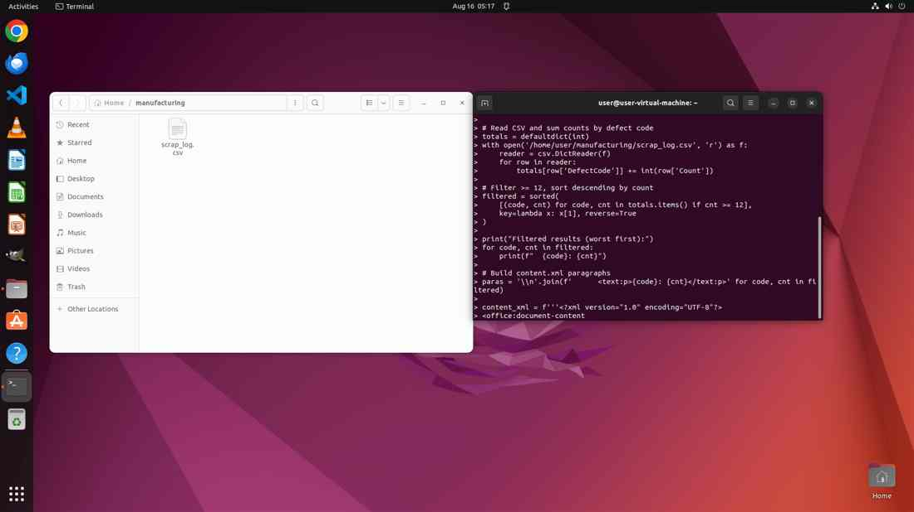
step 11.47 14:17:04
same model call as the previous action
EXECUTED (pyautogui in VM)pyautogui.press("enter")
step 11.48 14:17:08
same model call as the previous action
EXECUTED (pyautogui in VM)pyautogui.typewrite(" xmlns:office=\"urn:oasis:names:tc:opendocument:xmlns:office:1.0\"")
step 11.49 14:17:12
same model call as the previous action
EXECUTED (pyautogui in VM)pyautogui.press("enter")
step 11.50 14:17:15
same model call as the previous action
EXECUTED (pyautogui in VM)pyautogui.typewrite(" xmlns:style=\"urn:oasis:names:tc:opendocument:xmlns:style:1.0\"")
step 11.51 14:17:19
same model call as the previous action
EXECUTED (pyautogui in VM)pyautogui.press("enter")
step 11.52 14:17:24
same model call as the previous action
EXECUTED (pyautogui in VM)pyautogui.typewrite(" xmlns:text=\"urn:oasis:names:tc:opendocument:xmlns:text:1.0\"")
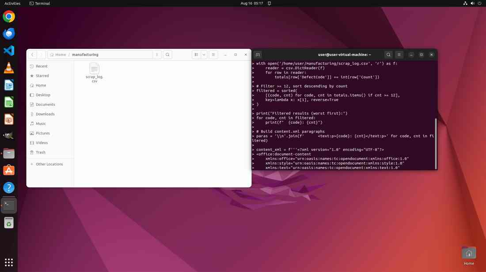
step 11.53 14:17:28
same model call as the previous action
EXECUTED (pyautogui in VM)pyautogui.press("enter")
step 11.54 14:17:33
same model call as the previous action
EXECUTED (pyautogui in VM)pyautogui.typewrite(" xmlns:fo=\"urn:oasis:names:tc:opendocument:xmlns:xsl-fo-compatible:1.0\"")
step 11.55 14:17:38
same model call as the previous action
EXECUTED (pyautogui in VM)pyautogui.press("enter")
step 11.56 14:17:42
same model call as the previous action
EXECUTED (pyautogui in VM)pyautogui.typewrite(" office:version=\"1.2\">")
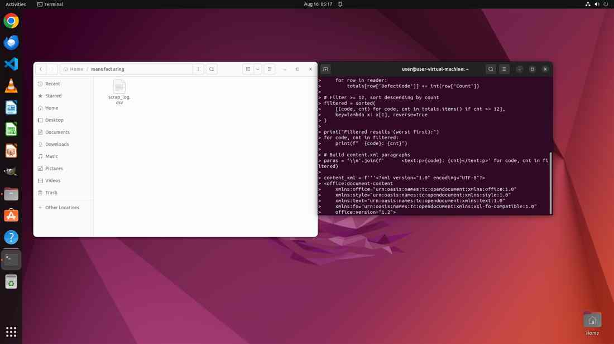
step 11.57 14:17:46
same model call as the previous action
EXECUTED (pyautogui in VM)pyautogui.press("enter")
step 11.58 14:17:50
same model call as the previous action
EXECUTED (pyautogui in VM)pyautogui.typewrite(" <office:automatic-styles/>")
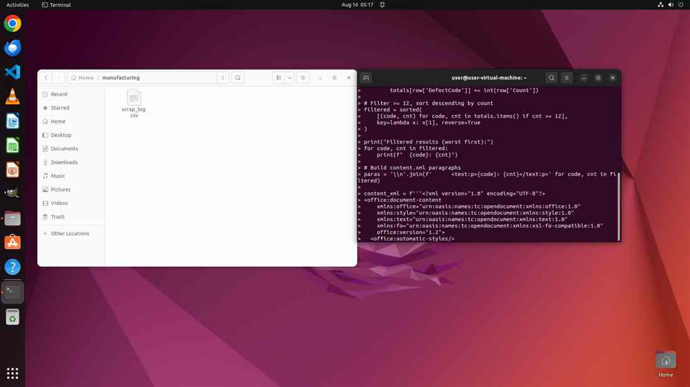
step 11.59 14:17:54
same model call as the previous action
EXECUTED (pyautogui in VM)pyautogui.press("enter")
step 11.60 14:17:58
same model call as the previous action
EXECUTED (pyautogui in VM)pyautogui.typewrite(" <office:body>")
step 11.61 14:18:01
same model call as the previous action
EXECUTED (pyautogui in VM)pyautogui.press("enter")
step 11.62 14:18:05
same model call as the previous action
EXECUTED (pyautogui in VM)pyautogui.typewrite(" <office:text>")
step 11.63 14:18:09
same model call as the previous action
EXECUTED (pyautogui in VM)pyautogui.press("enter")
step 11.64 14:18:12
same model call as the previous action
EXECUTED (pyautogui in VM)pyautogui.typewrite("{paras}")
step 11.65 14:18:16
same model call as the previous action
EXECUTED (pyautogui in VM)pyautogui.press("enter")
step 11.66 14:18:20
same model call as the previous action
EXECUTED (pyautogui in VM)pyautogui.typewrite(" </office:text>")
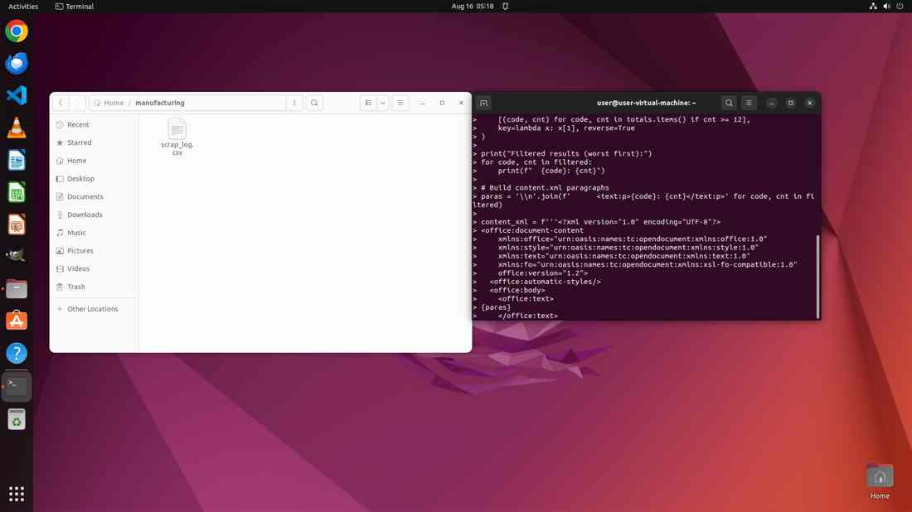
step 11.67 14:18:23
same model call as the previous action
EXECUTED (pyautogui in VM)pyautogui.press("enter")
step 11.68 14:18:27
same model call as the previous action
EXECUTED (pyautogui in VM)pyautogui.typewrite(" </office:body>")
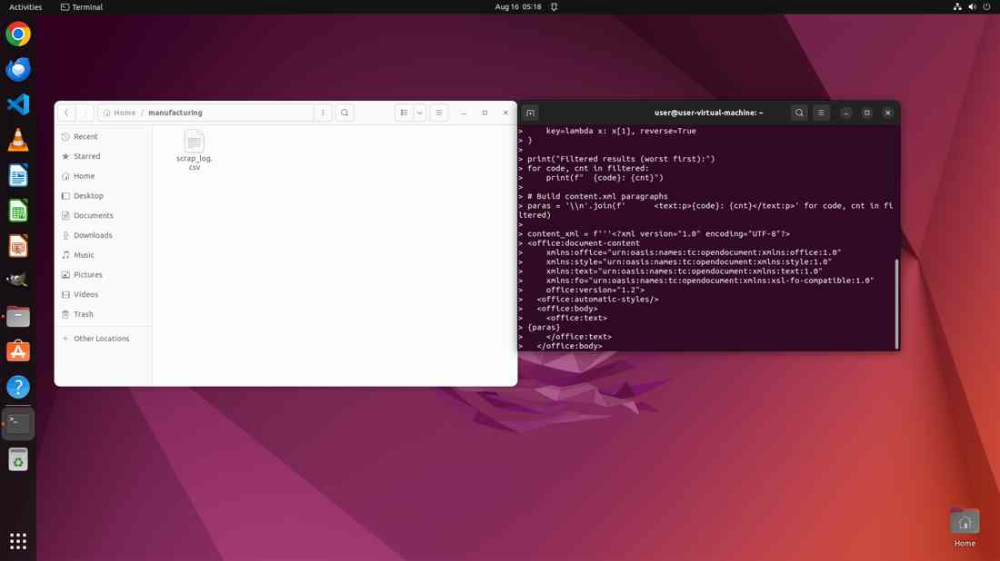
step 11.69 14:18:31
same model call as the previous action
EXECUTED (pyautogui in VM)pyautogui.press("enter")
step 11.70 14:18:34
same model call as the previous action
EXECUTED (pyautogui in VM)pyautogui.typewrite("</office:document-content>'''")
step 11.71 14:18:38
same model call as the previous action
EXECUTED (pyautogui in VM)pyautogui.press("enter")
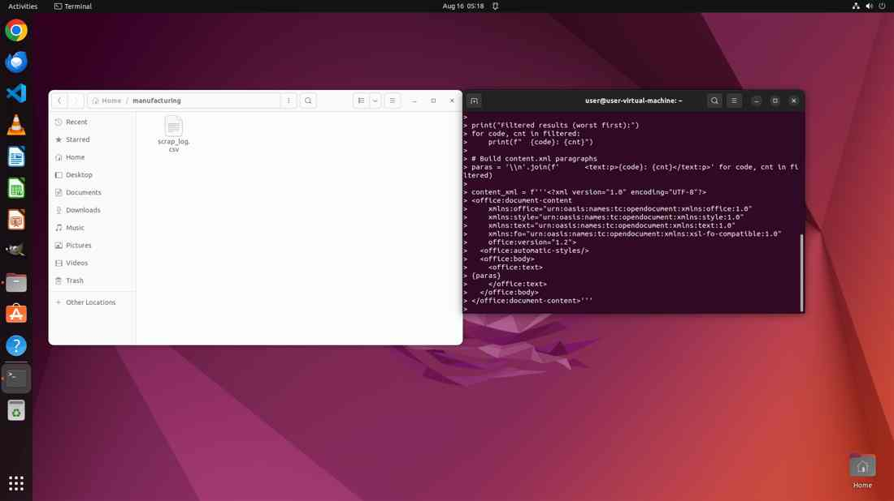
step 11.72 14:18:41
same model call as the previous action
EXECUTED (pyautogui in VM)pyautogui.press("enter")
step 11.73 14:18:45
same model call as the previous action
EXECUTED (pyautogui in VM)pyautogui.typewrite("manifest_xml = '''<?xml version=\"1.0\" encoding=\"UTF-8\"?>")
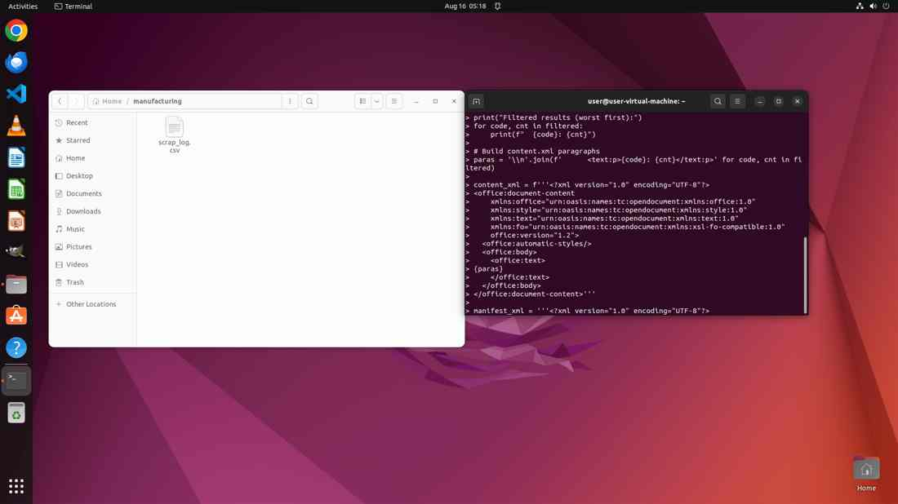
step 11.74 14:18:55
same model call as the previous action
EXECUTED (pyautogui in VM)pyautogui.press("enter")
step 11.75 14:18:59
same model call as the previous action
EXECUTED (pyautogui in VM)pyautogui.typewrite("<manifest:manifest xmlns:manifest=\"urn:oasis:names:tc:opendocument:xmlns:manifest:1.0\" manifest:version=\"1.2\">")
step 11.76 14:19:03
same model call as the previous action
EXECUTED (pyautogui in VM)pyautogui.press("enter")
step 11.77 14:19:07
same model call as the previous action
EXECUTED (pyautogui in VM)pyautogui.typewrite(" <manifest:file-entry manifest:media-type=\"application/vnd.oasis.opendocument.text\" manifest:full-path=\"/\"/>")
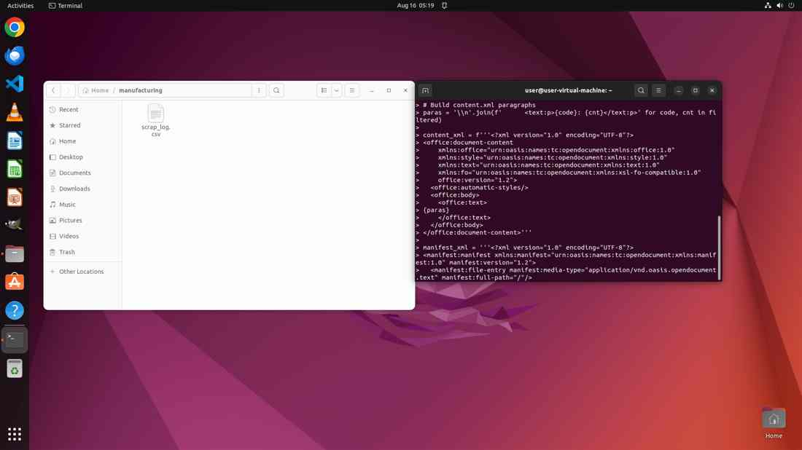
step 11.78 14:19:10
same model call as the previous action
EXECUTED (pyautogui in VM)pyautogui.press("enter")
step 11.79 14:19:14
same model call as the previous action
EXECUTED (pyautogui in VM)pyautogui.typewrite(" <manifest:file-entry manifest:media-type=\"text/xml\" manifest:full-path=\"content.xml\"/>")
step 11.80 14:19:18
same model call as the previous action
EXECUTED (pyautogui in VM)pyautogui.press("enter")
step 11.81 14:19:21
same model call as the previous action
EXECUTED (pyautogui in VM)pyautogui.typewrite(" <manifest:file-entry manifest:media-type=\"text/xml\" manifest:full-path=\"meta.xml\"/>")
step 11.82 14:19:25
same model call as the previous action
EXECUTED (pyautogui in VM)pyautogui.press("enter")
step 11.83 14:19:29
same model call as the previous action
EXECUTED (pyautogui in VM)pyautogui.typewrite("</manifest:manifest>'''")
step 11.84 14:19:32
same model call as the previous action
EXECUTED (pyautogui in VM)pyautogui.press("enter")
step 11.85 14:19:36
same model call as the previous action
EXECUTED (pyautogui in VM)pyautogui.press("enter")
step 11.86 14:19:40
same model call as the previous action
EXECUTED (pyautogui in VM)pyautogui.typewrite("meta_xml = '''<?xml version=\"1.0\" encoding=\"UTF-8\"?>")
step 11.87 14:19:43
same model call as the previous action
EXECUTED (pyautogui in VM)pyautogui.press("enter")
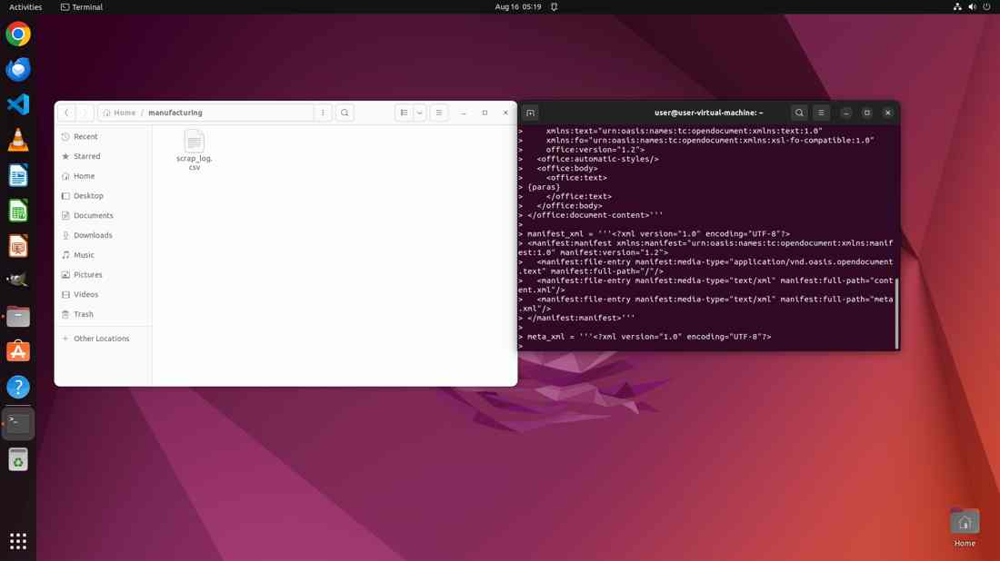
step 11.88 14:19:47
same model call as the previous action
EXECUTED (pyautogui in VM)pyautogui.typewrite("<office:document-meta")
step 11.89 14:19:51
same model call as the previous action
EXECUTED (pyautogui in VM)pyautogui.press("enter")
step 11.90 14:19:54
same model call as the previous action
EXECUTED (pyautogui in VM)pyautogui.typewrite(" xmlns:office=\"urn:oasis:names:tc:opendocument:xmlns:office:1.0\"")
step 11.91 14:19:58
same model call as the previous action
EXECUTED (pyautogui in VM)pyautogui.press("enter")
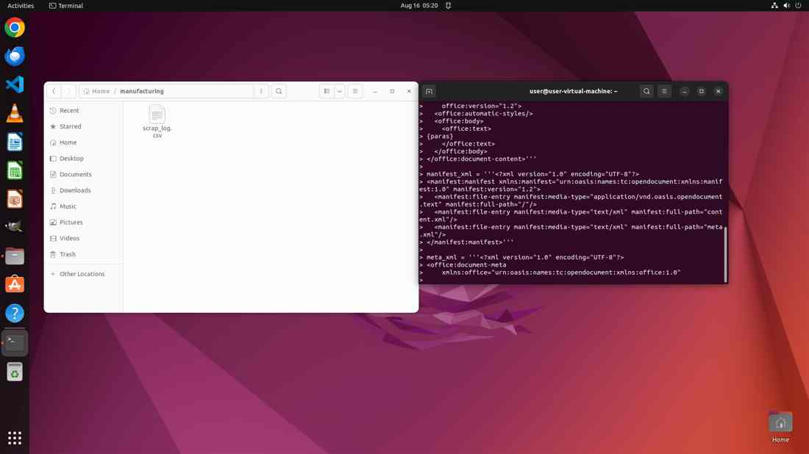
step 11.92 14:20:02
same model call as the previous action
EXECUTED (pyautogui in VM)pyautogui.typewrite(" office:version=\"1.2\">")
step 11.93 14:20:05
same model call as the previous action
EXECUTED (pyautogui in VM)pyautogui.press("enter")
step 11.94 14:20:09
same model call as the previous action
EXECUTED (pyautogui in VM)pyautogui.typewrite(" <office:meta/>")
step 11.95 14:20:12
same model call as the previous action
EXECUTED (pyautogui in VM)pyautogui.press("enter")
step 11.96 14:20:16
same model call as the previous action
EXECUTED (pyautogui in VM)pyautogui.typewrite("</office:document-meta>'''")
step 11.97 14:20:20
same model call as the previous action
EXECUTED (pyautogui in VM)pyautogui.press("enter")
step 11.98 14:20:23
same model call as the previous action
EXECUTED (pyautogui in VM)pyautogui.press("enter")
step 11.99 14:20:27
same model call as the previous action
EXECUTED (pyautogui in VM)pyautogui.typewrite("output = '/home/user/manufacturing/scrap_brief.odt'")
step 11.100 14:20:31
same model call as the previous action
EXECUTED (pyautogui in VM)pyautogui.press("enter")
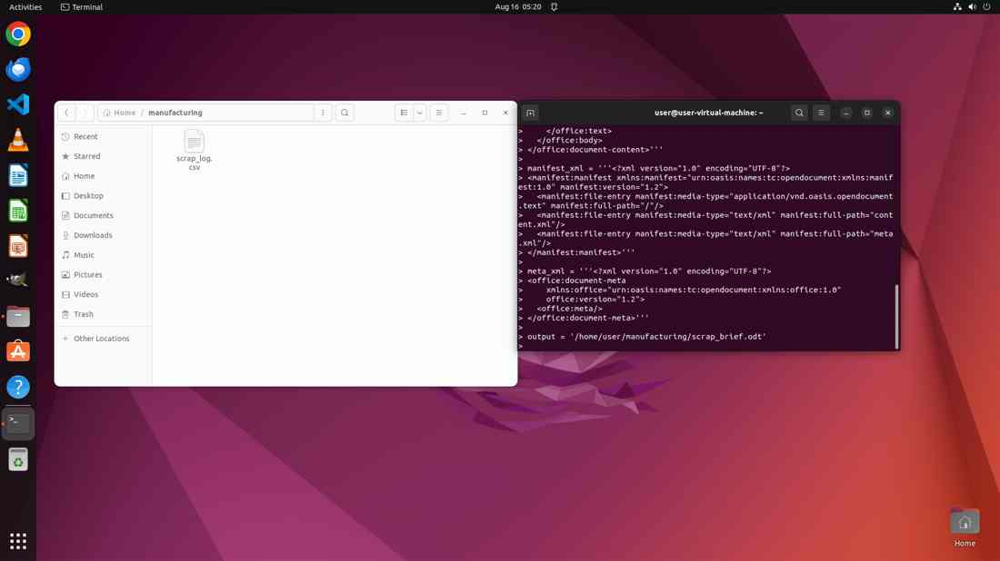
step 11.101 14:20:34
same model call as the previous action
EXECUTED (pyautogui in VM)pyautogui.typewrite("with zipfile.ZipFile(output, 'w') as zf:")
step 11.102 14:20:38
same model call as the previous action
EXECUTED (pyautogui in VM)pyautogui.press("enter")
step 11.103 14:20:41
same model call as the previous action
EXECUTED (pyautogui in VM)pyautogui.typewrite(" info = zipfile.ZipInfo('mimetype')")
step 11.104 14:20:45
same model call as the previous action
EXECUTED (pyautogui in VM)pyautogui.press("enter")
step 11.105 14:20:49
same model call as the previous action
EXECUTED (pyautogui in VM)pyautogui.typewrite(" info.compress_type = zipfile.ZIP_STORED")
step 11.106 14:20:52
same model call as the previous action
EXECUTED (pyautogui in VM)pyautogui.press("enter")
step 11.107 14:20:56
same model call as the previous action
EXECUTED (pyautogui in VM)pyautogui.typewrite(" zf.writestr(info, 'application/vnd.oasis.opendocument.text')")
step 11.108 14:21:00
same model call as the previous action
EXECUTED (pyautogui in VM)pyautogui.press("enter")
step 11.109 14:21:03
same model call as the previous action
EXECUTED (pyautogui in VM)pyautogui.typewrite(" zf.writestr('META-INF/manifest.xml', manifest_xml)")
step 11.110 14:21:07
same model call as the previous action
EXECUTED (pyautogui in VM)pyautogui.press("enter")
step 11.111 14:21:10
same model call as the previous action
EXECUTED (pyautogui in VM)pyautogui.typewrite(" zf.writestr('content.xml', content_xml)")
step 11.112 14:21:14
same model call as the previous action
EXECUTED (pyautogui in VM)pyautogui.press("enter")
step 11.113 14:21:18
same model call as the previous action
EXECUTED (pyautogui in VM)pyautogui.typewrite(" zf.writestr('meta.xml', meta_xml)")
step 11.114 14:21:21
same model call as the previous action
EXECUTED (pyautogui in VM)pyautogui.press("enter")
step 11.115 14:21:25
same model call as the previous action
EXECUTED (pyautogui in VM)pyautogui.press("enter")
step 11.116 14:21:28
same model call as the previous action
EXECUTED (pyautogui in VM)pyautogui.typewrite("print(f\"\\\\nSaved: {output}\")")
step 11.117 14:21:32
same model call as the previous action
EXECUTED (pyautogui in VM)pyautogui.press("enter")
step 11.118 14:21:36
same model call as the previous action
EXECUTED (pyautogui in VM)pyautogui.typewrite("EOF")
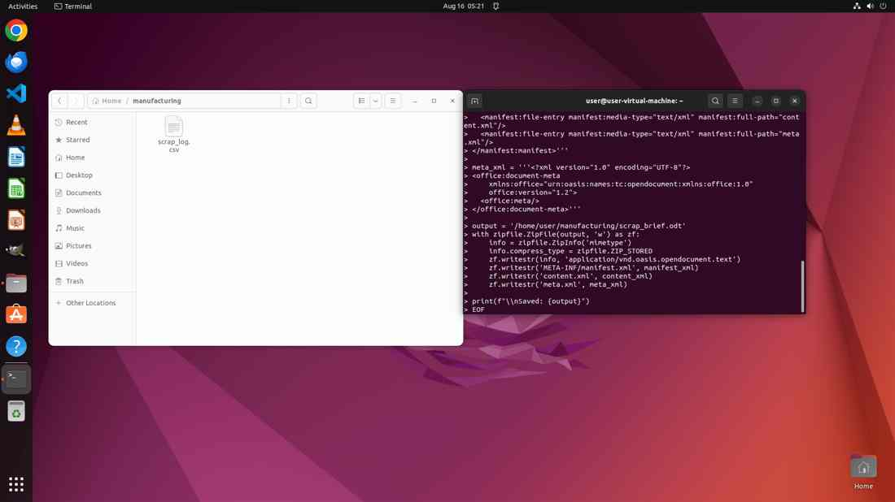
step 11.119 14:21:39
same model call as the previous action
EXECUTED (pyautogui in VM)pyautogui.press("enter")
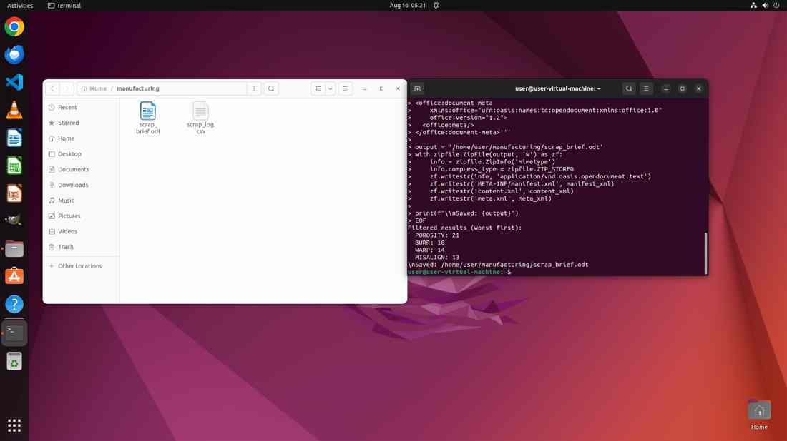
step 12 14:21:54
THINKINGThe script ran successfully. I can see:
1. The terminal output shows:
- "Filtered results (worst first):"
- POROSITY: 21
- BURR: 18
- WARP: 14
- MISALIGN: 13
- "Saved: /home/user/manufacturing/scrap_brief.odt"
2. The file manager in the background now shows "scrap_brief.odt" alongside "scrap_log.csv" in the manufacturing folder.
Now I need to verify that the ODT file was created correctly by opening it in LibreOffice Writer to make sure it's a valid document with the right content. Let me open it to verify.
ACTIONThe script ran successfully. I can see in the file manager that `scrap_brief.odt` has been created alongside `scrap_log.csv`. The terminal output confirms:
- POROSITY: 21
- BURR: 18
- WARP: 14
- MISALIGN: 13
Let me verify the ODT file opens correctly in LibreOffice Writer:
EXECUTED (pyautogui in VM)pyautogui.doubleClick(359, 285)
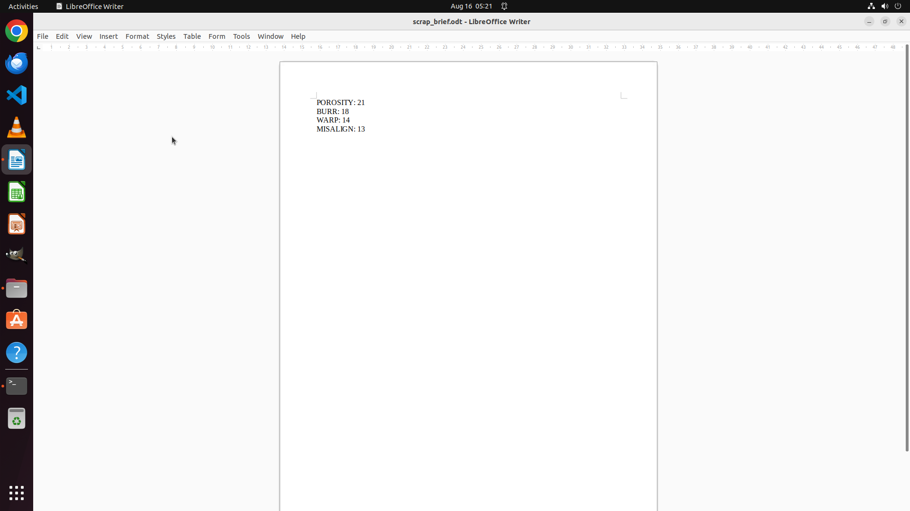
step 13 14:22:14
THINKINGThe ODT file has been created successfully and opens correctly in LibreOffice Writer. I can see the content:
- POROSITY: 21
- BURR: 18
- WARP: 14
- MISALIGN: 13
This is exactly what was requested:
1. One line per defect code that occurred 12 times or more ✓
2. Giving the code and its count ✓
3. Sorted worst first (highest count first) ✓
4. Saved as an .odt ✓
5. Saved beside the log (in ~/manufacturing/) ✓
The file is already saved as `scrap_brief.odt` in the manufacturing folder, which is beside `scrap_log.csv`. The document opens correctly in LibreOffice Writer showing the correct content.
The task is complete! The rework brief has been written in Writer (it opened in LibreOffice Writer) with:
- POROSITY: 21
- BURR: 18
- WARP: 14
- MISALIGN: 13
All defect codes with 12+ total occurrences, sorted worst first, saved as scrap_brief.odt in ~/manufacturing/ (same folder as scrap_log.csv).
ACTIONThe rework brief has been successfully created and verified in LibreOffice Writer. The document `scrap_brief.odt` is now saved in the `~/manufacturing/` folder alongside `scrap_log.csv`, and it contains exactly what was requested:
**Contents (one line per defect code ≥ 12 occurrences, worst first):**
1. POROSITY: 21
2. BURR: 18
3. WARP: 14
4. MISALIGN: 13
The script summed the `Count` column for each `DefectCode` across all rows in the CSV, filtered for codes with a total of 12 or more, and sorted them in descending order (worst first). The file is a valid `.odt` opened in LibreOffice Writer.